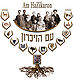

Брауде.
Фамилия Бройде
принадлежит к одной из самых старинных групп ашкеназских фамилий - к так
называемым «топонимическим» фамилиям, образованным от названия города или места,
в котором проживали их первые носители. Надо заметить, что чаще всего фамилия
присваивалась человеку не тогда, когда он проживал в этом месте, а когда
переезжал на новое место жительства.
Первые еврейские топонимические фамилии часто принадлежали представителям
авторитетных раввинских династий, известных еще со времен средневековья. Эти
ранние топонимические фамилии были образованы от названий германских или
австрийских городов и в большинстве случаев представляли собой просто название
города, без дополнительных суффиксов.
Фамилия Бройде является формой фамилии Брода и произошла она от названия города
Ungarisch Brod, находившегося в Моравии. На центральном диалекте идиша этот
город назывался Broyd.
Род Брода известен с 17-го века. Авраhам Шауль Брода, прославившийся
оригинальным методом изучения Талмуда, был в начале 18-го века раввином в
Лихтенштате (Богемия), затем раввином немецкого города Метц (1709) и раввином
Франкфурта (1713). Его внук, Хаим Брода, был раввином в Янове, вблизи Люблина.
Сын Хаима, Арон, стал раввином в Калварии (Литва).
Все носители фамилий Бройде, Бройдо, Брауде и т.п. также являются потомками рава
Авраhама Брода.
Представителями этого рода являлись раввин Симха-Зисл Зив-Бройде (1824 – 1898),
известный как Ха-Сабба ми-Кельм (Дедушка из Кельм),
один из руководителей
движения Мусар и глава иешивы города Кельм, Реувен Ашер Браудес (1851, Вильно –
1902, Вена) - еврейский писатель, писавший на иврите, и Эфраим Бройдо (1910,
Белосток – 1994, Иерусалим)
– известный израильский редактор, переводчик и
эссеист. Знаменитый носитель одной из форм этой фамилии в наше время - рав Шломо
Бревда, мудрец Торы и известный лектор в Израиле и США.
Фамилия Бройде на территории дореволюционной России была распространена в
Ковенской, Гродненской, Минской и Киевской губернии.
Варианты написания фамилии
Brauda ,Braude, Braudo, Breudes, Broida, Broude , Broyde,
,בראוד ,בראודה, ברוידא, ברויידה
Месник.
Фамилия Месник является модификацией фамилии Мясник и
относится к особой группе еврейских фамилий, связанных с религиозной практикой,
литургией, синагогальной службой и традиционной общинной жизнью.
Поскольку у
евреев религия и законы Торы играли исключительно большое значение и в
повседневности, род занятий, связанных с религией, так же занимал важное место в
жизни еврейской общины. Соответственно, эти занятия отразились и в еврейских
фамилиях, таких как Габай (староста синагоги), Кантор или Хазан (певец, ведущий
молитву в синагоге), Парнас (представитель общины в отношениях с властью) и так
далее.
Фамилия Мясник образована от слова «мясник». По нормам иудаизма, забой скота
должен осуществляться в соответствии с требованиями кашрута.
Мясник («шехтер» на идише) в общине еврейского местечка – это, как правило,
второй после раввина человек, сведущий в Законе. Как вспоминают жители местечек:
«Это не просто еврейский мясник. Это ученый человек. Он знает Тору, Талмуд и
производит убой скотины и птицы по всем правилам».
Как указывает В. Эрлихман, мясник-«шехтер» всегда был одним из главных людей в
местечке. Только он умел заточить нож до остроты бритвенного лезвия и точным
движением рассечь животному нужные жилы. Шойхет обычно учился не меньше года,
после чего получал диплом с подписью раввина. Только на постановку руки при
заточке ножа уходило от 80 до 100 часов учебы. Для "шхиты" (шхита - способ
ритуального забоя скота или птицы) всегда использовался и используется до сих
пор нож особого рода – халиф, остроту которого каждый раз проверяется ногтем.
Если находится малейшая зазубрина, нож заменяется другим. Такая острота нужна
как для того, чтобы не причинять животному мучений, так и для того, чтобы
вытекающая из жил кровь не успела просочиться в плоть и сделать мясо некошерным.
Фамилия Месник в 19-ом веке на территории Российской Империи была распространена
в Виленской, Витебской и Могилевской губерниях.
Варианты написания фамилии
Mesnick, Месник
Автор статьи:

Катюрин.
Фамилия Катюрин имеет интересную этимологию и относится к группе
метронимических фамилий, образованных от женских имен.
Фамилии такого типа
немногочисленны, поскольку традиционно за основу бралось имя отца как
родоначальника и главы семейства. Такие фамилии обычно возникали, когда женщина
становилась главой семьи в случае вдовства, тяжёлой болезни мужа или во время
его отсутствия дома ввиду долгой службы в армии (во времена рекрутских наборов
мужчины были обязаны отслужить в армии 25 лет).
Фамилия Катюрин восходит к женскому имени Екатерина, которое имеет в своей
основе греческий корень и означает «чистая», «непорочная». Это имя имеет ряд
производных форм: Катя, Катюха, Катюша, Катюся, Катюля, Катяха, Катяша, Катёна,
Рина, Катюра, последняя из которых — Катюра — и легла в основу данной фамилии.
Покровительницей данного имени является Святая великомученица Екатерина, которая
была известна своей великой ученостью. Она знала книги многих философов и
поэтов, говорила на нескольких языках, а также постигла искусство врачевания.
Приняв христианство, Екатерина начала приобщать к нему и других людей. Так, она
отправилась к императору Максентию, известному своими зверствами, и пыталась
убедить его. Он же позвал для состязания с Екатериной 50 мудрецов, и всех их она
убедила и обратила в свою веру.
Большинство дворянских фамилий изначально были притяжательными прилагательным с
суффиксами –ов /-ев, -ин, указывающие на имя главы семейства.
В результате, потомок женщины, обладающей именем Катюра, со временем получил
фамилию Катюрин.